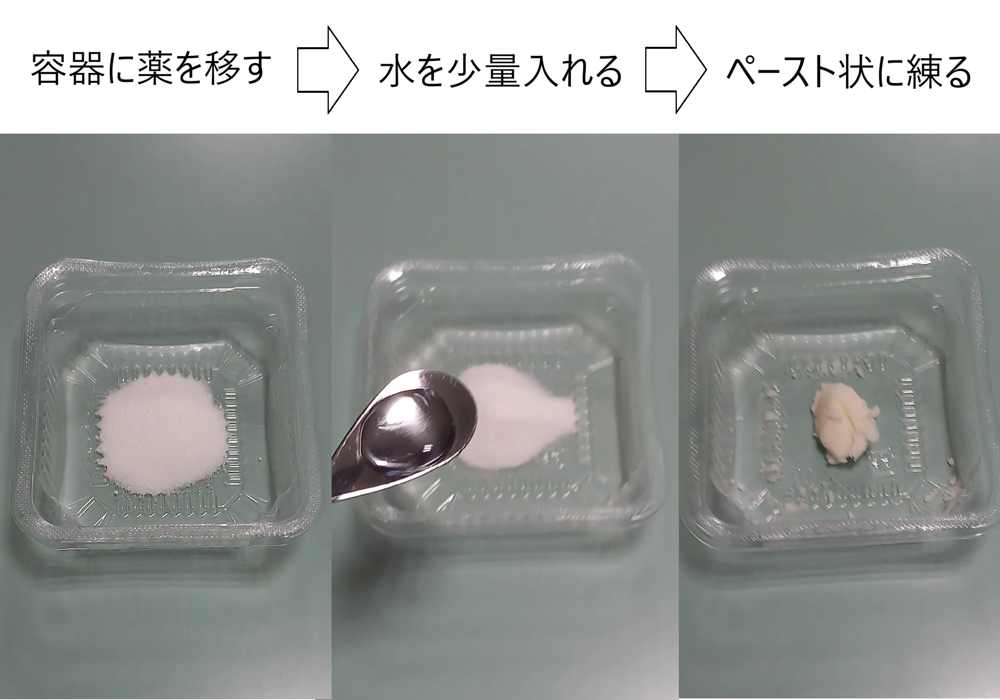
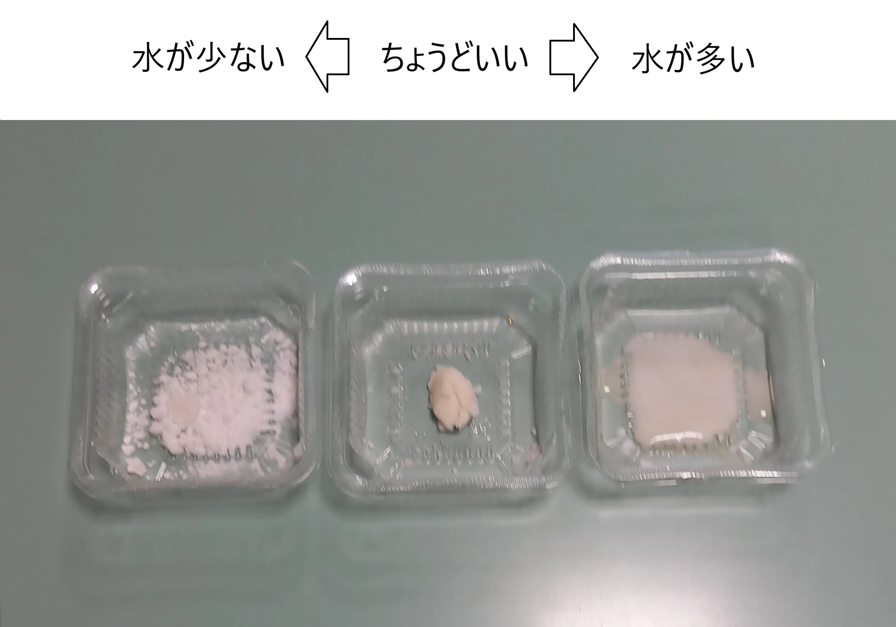

処方箋を写真で送っていただくと、来局前にお薬をご用意できます。
準備が整いましたら、メッセージでお知らせいたします。
お薬を飲むときに気になることをまとめています。
質問をタップすると、回答が下に開きます。
1回分の粉薬を、少量の水や湯ざましに溶かします。
溶かした薬は、スポイトやスプーン、哺乳瓶の乳首などで、少しずつ口に入れてあげましょう。
飲み終わったら、水や湯ざましなどを飲ませて、口の中に残った薬を流してあげましょう。
粉薬にほんの少し水を加え、ペースト状にします。

適切な水の量になるまで１滴ずつ水を加える。

指先に少量ずつ取り、赤ちゃんの上体を30〜45度起こした状態で、清潔な指で上あごか頬の内側に塗ってあげましょう。
その後、水や湯ざましなどを飲ませます。
舌の先は苦みを感じやすいため、避けるのがおすすめです。
薬によっては、ヨーグルトやゼリー、アイスクリームなどに混ぜることもできます。
混ぜるものに迷ったときは、薬剤師にご相談ください。
ミルクに混ぜてしまうと薬の味でミルクを嫌いになってしまう可能性がありますのでご注意ください。
粉を飲んでから水を飲むと、口の中に味が広がってしまいます。
水を口に含んでから粉を入れる飲み方がおすすめです。
ただし、小さいお子さんには難しいかもしれません。
お湯に漢方薬を溶かすと、口の中に薬が残らず、小さいお子さんでも飲みやすくなります。
漢方薬は、インスタントコーヒーと同じ原理で粉にしているため、本来の飲み方に近い方法です。
飲みやすいように甘い味付けがされているものがほとんどですが、特に乳幼児では甘すぎて飲めない場合があります。
正確に測りとってから、少量の水で薄めて飲ませてみましょう。
すぐに吐いてしまった場合は、もう1度1回分の薬を飲ませてください。
すぐに飲ませようとすると再度吐いてしまうこともあるので、落ち着いてから服用させてください。
30分以上経って吐いた場合は、薬が吸収された可能性があるため、再度服用はせずに、次回の服用タイミングまで様子をみましょう。
基本は食前と食後どちらでもかまいません。
授乳後はおなかいっぱいで服用したがらないこともあるので、授乳前の服用でも大丈夫です。
お薬の種類や処方の用法・用量によっても異なるので、飲み忘れた場合は薬剤師に確認しましょう。
錠剤やカプセルを安全に飲めるのは、6歳くらいからが目安です。ただし、個人差が大きく、発達や練習状況によって異なります。
実際のお薬では喉に詰まらせるリスクもあるので、平たくて小さい（直径6mm程度の）ラムネなどで練習することをおすすめします。唾液で溶けやすく、球体ではないため、喉に詰まるリスクが低くなります。
記録の「1・2・3・4・5」の表示を、A〜Zの1文字に変更できます。 記録データそのものはこれまでどおり個別に保存されます。